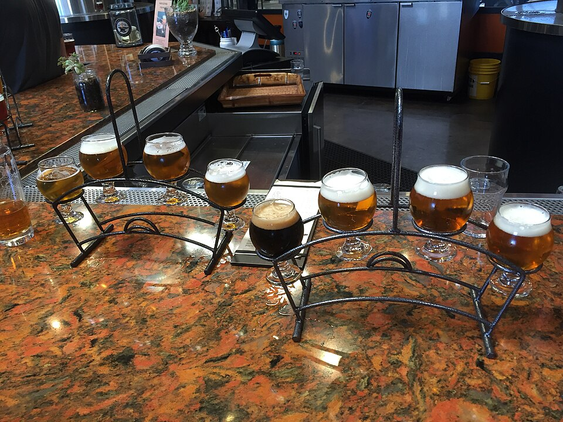
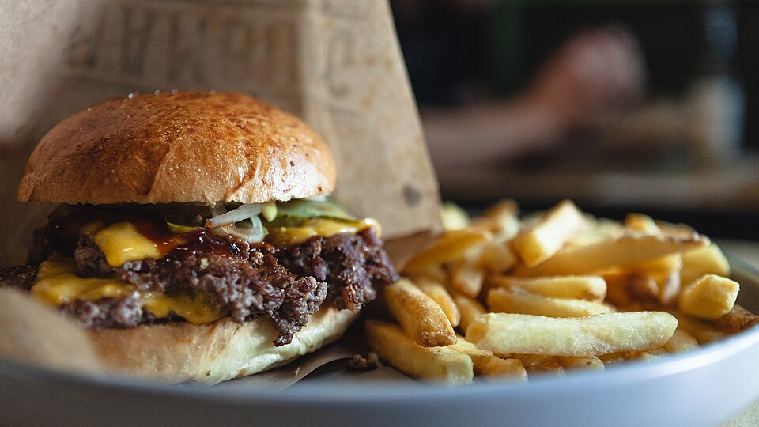
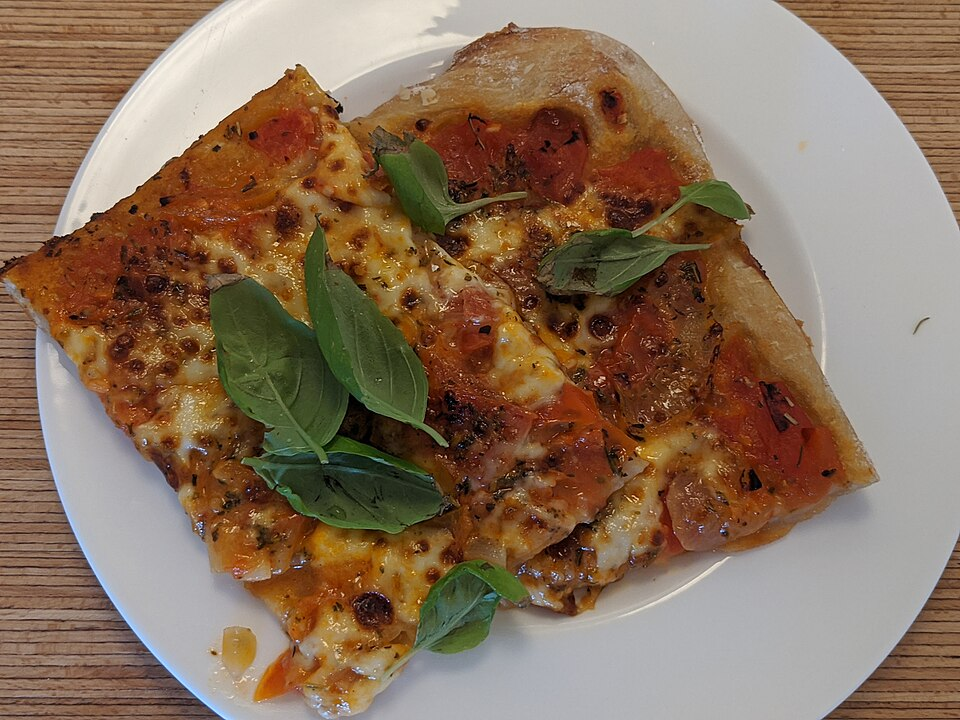

Weekly Schedule
- Monday – Thursday: 11:00 AM – 10:00 PM
- Friday: 11:00 AM – 12:00 AM (Midnight)
- Saturday: 10:00 AM – 12:00 AM (Midnight)
- Sunday: 10:00 AM – 9:00 PM
- Weekend Brunch: Sat & Sun 10:00 AM – 3:00 PM
Plan your brewery visit, lunch stop, or weekend brunch at Suffolk Punch Brewing. Conveniently situated in Charlotte's South End right alongside the Charlotte Rail Trail and steps from the Lynx New Bern Light Rail Station.

Address:
2911 Griffith Street
Charlotte, NC 28203
Direct frontage on the Charlotte Rail Trail next to New Bern Station.
Format:
Indoor Brewhouse Dining Room
Covered Outdoor Pavilion
Full Coffee Bar & Retail To-Go
Walk-ins welcomed across all indoor and outdoor areas.
Multiple convenient ways to reach our South End campus:


Our expansive outdoor pavilion is designed for year-round comfort: